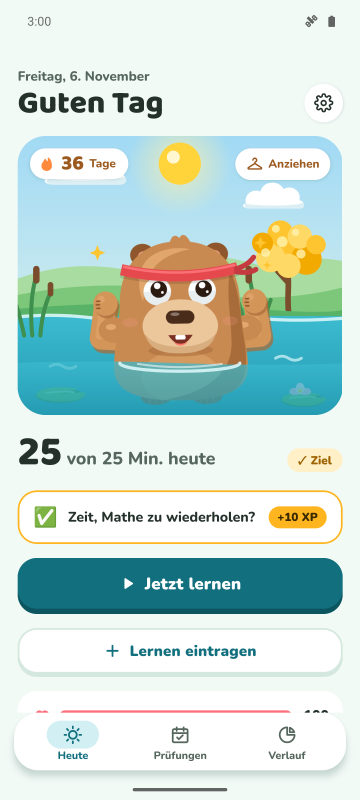
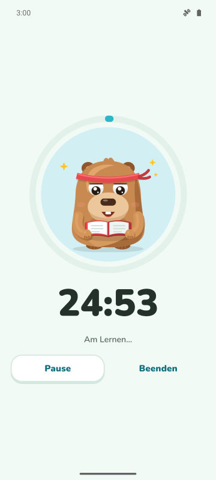
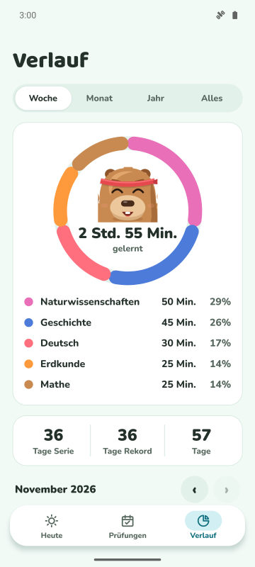
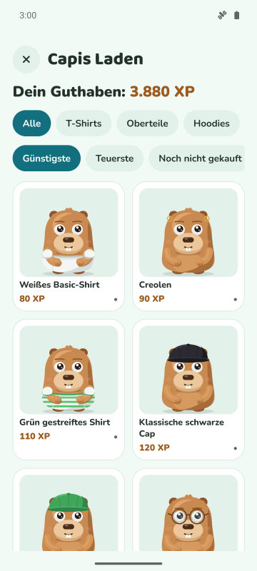

Tagesziel und Serie
Lege fest, wie viele Minuten du pro Tag lernst. Ziel geschafft: Deine Serie wächst und dein Capybara feiert.
Fokus-Timer, tägliche Serie und Countdown bis zur Prüfung. Je mehr du lernst, desto glücklicher und stärker wird dein Capybara.
Bald bei Google Play
Kostenlos für Android. iPhone später.

Lege fest, wie viele Minuten du pro Tag lernst. Ziel geschafft: Deine Serie wächst und dein Capybara feiert.
Ein Timer mit drei Modi. Im Schutzmodus erscheint das Capybara über den Apps, die du meiden willst.
Trag deine Prüfung ein und sieh die verbleibenden Tage. Jeden Tag gibt es eine Mission mit dem Fach, das dich am meisten braucht.
Sammle beim Lernen XP und tausche sie gegen Outfits und Accessoires. Feiertage und dein Geburtstag werden auch gefeiert.



Ja. Die App ist kostenlos mit Werbung. Premium (optional) entfernt die Werbung und schaltet den Schutzmodus, stumme Benachrichtigungen beim Lernen und 3 Serien-Schilde pro Monat frei.
Nein. Deine Daten bleiben auf deinem Handy. Wenn du willst, kannst du sie mit deinem eigenen Google Drive synchronisieren.
Ja. Trag das Prüfungsdatum ein, verfolge den Countdown und bekomme Erinnerungen 7, 3 und 1 Tag vorher.
Bei Forest pflanzt du Bäume. Bei CapyFoco kümmerst du dich um ein Capybara, das mit deinem Lernen wächst, mit Tagesserie, Zielen und Prüfungs-Countdown in einer App.
Im Moment nur Android. Eine iPhone-Version ist geplant.